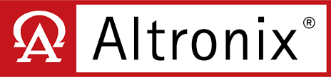
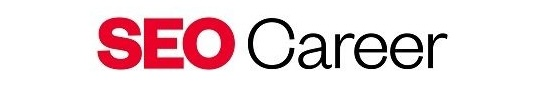
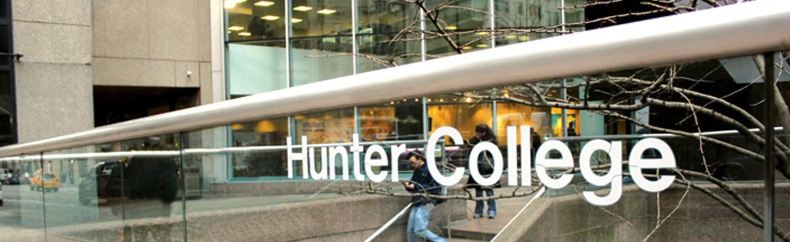

Intro

Nice to meet you! I'm a passionate programmer armed with a Bachelors Degree from Hunter College.
I know you've probably heard something along those lines too many times, so feel free to click here to see my experiences or here for my projects to skip the rest.
Technical Skills:
I am proficient in C++, Java, Python, HTML, CSS, and JavaScript. Additionally, I have a good grasp of various other languages and technologies that enhance my versatility.
Personal Goal:
My passion for programming began with scripting in games, where the thrill of building something from the ground up sparked a deep-seated love for the process of creation.
This early experience solidified my desire to pursue a career in this field. My ultimate goal is to collaborate with a talented team, working together toward a shared vision that benefits and simplifies the lives of others.
I am driven by the prospect of contributing to meaningful projects that have a significant impact. I envision myself as part of a dynamic team, tackling complex challenges and developing innovative solutions.
The opportunity to work on large-scale projects that make a real difference is where I see myself in the future. I am committed to continuous learning and growth, striving to achieve excellence in everything I do.
Personal Insight:
One thing about me is my love for knowledge. If you're a hiring manager who's read my responses, you've likely noticed this already. I constantly strive to learn new things and better myself because it brings me immense joy.
This drive has led me to partake in the SEO program, where I developed my skills in a professional setting, including technical interviews.
Additionally, I completed a Coursera course in Cybersecurity, which I find fascinating as a hobby, earning a certificate in the process.
Experience

During a 5-week online fellowship at Headstarter AI, I worked on five different AI projects, demonstrating strong time management, AI skills, and personal growth. My chosen track involved creating a website designed to attract 1000 users.

I worked at Altronix for over a year. Though my role wasn't directly related to software, I have gained valuable insights and knowledge from interacting with software engineers. This experience has also given me a better understanding of how software can be integrated with hardware.

Through an online mentorship with Microsoft, I learned effective time management strategies and received one-on-one guidance from a Cyber Security Analyst. This mentorship taught me valuable stress management techniques and ways to optimize work efficiency. Additionally, I modified existing software to correct errors and adapt to new hardware, enhancing overall efficiency.
Contact
If you'd like to get in touch with me my email, and other socials are listed below:
Personal Email
College Email
College & Other Education

Received coaching and online instruction to achieve targeted interview, technical, and professional developmental goals. Learned all about business fundamentals to compete successfully for internship opportunities.
Completing industry-specific training focused on developing technical skills, institutional knowledge, and attention to detail.

I am a graduate from Hunter College with a Bachelors Degree in Computer Science.
Relevant Coursework:
OOP Python
Software Design & Analysis I - III (Including Data Structures and Algorithms) in C++
Web Development
Computer Architecture I - III
Operating Systems

I took 60 credits worth of classes while in highschool thanks to my highschool's program. I was fortunate to graduate highschool and college at the same time securing an associates degree. Though I didn't gain much relevant knowledge in computer science since it wasn't my choice, this has taught me all about time/stress management, deadlines, and a hint of teamwork.
Projects
Coffee Crave:

Coffee Crave is a website designed for NYC college students to easily discover local coffee shops nearby. There are different features like a virtual study space, a short minigame, and even a surprise me option. The project uses React and Node.js on the frontend and backend, with SQL for storing users favorited shops and Firebase for authentication. It also integrates a news API to display up-to-date coffee-related articles.
Coffee Crave Website
A.I. Customer Support:

This is an AI-powered customer support chatbot designed to answer user questions in a professional, support-agent style. It uses the OpenAI API for real-time responses and is built with React, Next.js, and Material-UI. The interface supports streaming responses and smooth auto-scrolling for a natural chat experience.
Customer Support Website
Customer Support Repo
Character Class Simulator:
C++ is a language I’m very comfortable with, since it was the focus throughout my college coursework. I’ve built many C++ projects, but this one stands out because it highlights my ability to work with data structures and algorithms. It’s a simulation of a game world with multiple character classes like wards and bards each with their own buffs, debuffs, and unique abilities. There is also a damaging system as well as a Tavern.
Character Class Sim Repo
A.I. Flashcards:

This project uses AI to generate personalized flashcards based on any topic or text the user provides. This Next.js project utilizes OpenAI API for its generation. It also includes full user authentication with Clerk, purchasing and subscription support through Stripe (though not fully implemented so you can use for free), and Firebase as the main database for storing user decks for ease of access.
A.I Flashcards Website
A.I. Flashcards Repo